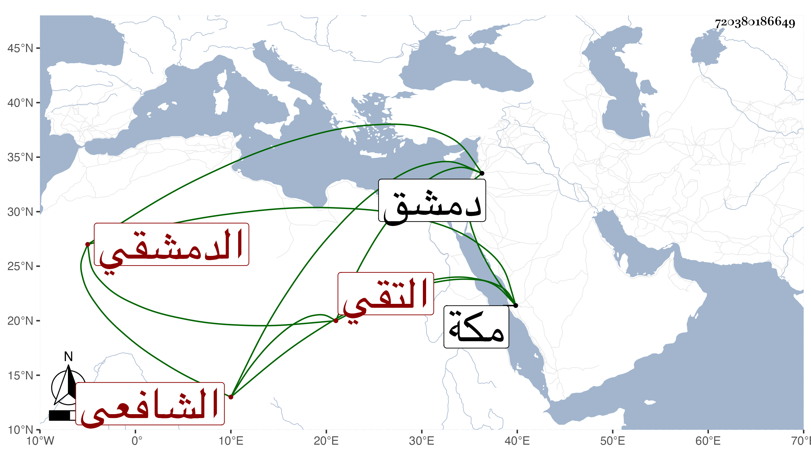

0902Sakhawi.DawLamic.ITO20230111-ara1.EIS1600.720380186649
Biography ID: 720380186649
89
أبو بكر بن سلطان بن أحمد التقي الدمشقي الشافعي أخو إبرهيم الماضي . ممن ينوب في القضاء بدمشق عن النجم بن الخيضري فمن بعده ورأيته في المجاورة بمكة بعد سنة خمس وثمانين .
